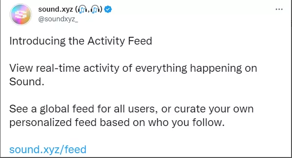

大家12月好！SeeMusic 栏目如期而至！
SeeMusic
SeeMusic
聚焦Web3 x 音乐领域
最新音乐消息每周速递
音乐人/音乐大事件分享
欢迎所有感兴趣的小伙伴投稿&加入
「SeeMusic Web3 & 音乐领域」
话不多说，以下SeeMusic的每周放送
Part.1
SeeMusic
NUM.
1
“Cooper的NFT暴论+1”
Cooper老哥继续展开论述他的NFT理论：NFT就该为粉丝赚钱，并且表示事实站在他这边。
论据是这样的：咱们第二期不是刚介绍过教科书级的Web3音乐人Daniel Allen么，有人在dune上专门做了个面板来跟踪Daniel的NFT数据，特别是二手转售情况，发现即使是Daniel这样的Web3宠儿，其NFT的历史持有人也不过600来个，但这600个人单单是在后续交易中就获利33万美元，连带着Daniel也能获益不菲。
Cooper老哥一再强调，啥叫变革？这就叫变革！这种经济模式和粉丝关系在Web2是不存在的！
话说，小编上月也mint了一首无人问津的歌，后来卖掉赚了20U，但始终还是没参透这有多大好处。小伙伴你们怎么看咧？
面板链接：https://d.stckr.xyz/public/dashboards/M0pgYSZCrz84MvJcJPAE9cQMX9JzVh1F8qUMN7iD
NUM.
2
“Web3音乐人获得格莱美提名”
出息了出息了！说起Web3音乐人，很多人往往觉得没有大牌，制作更是拉跨，甚至是“没出息才去搞Web3”。哼，谁说的来着？
上上周公布的新一届格莱美最佳唱片入围名单里，Web3厂牌DAORecords和MetaJAX（他们自称是“NFT广播网”）出品的专辑“Rhythm & Soul”荣获拉丁爵士这一趴的提名。
推文：https://twitter.com/MetaJAX/status/1592580923169869824
Web3与音乐的双料爱好者小伙伴里，肯定也有爵士乐的发烧友吧！双厨狂喜有木有？
为了表示庆祝，他们近期貌似要搞不少活动，还有纪念版NFT赠送哟！好这口的小伙伴去他们推上关注吧。
NUM.
3
"平台新闻两则"
领先的Web3音乐平台sound.xyz继刚刚推出playlist之后再接再厉，又推出了feed功能，这样你就能随意聚合你感兴趣的数据和活动啦！莫非是NFT炒家的需求？

NUM.
4
“某不科学的研讨会”
附2：讨论总结的干货：https://docs.google.com/document/d/1Ul2_CIroIJ1MyDbbDdRev8c7wZkmPYVOj37tEQf9pEc
Part.2
Web3音乐人之星

Henry
Web3音乐人越来越多了，我们争取每期选取一个略加介绍。说不定是从sound.xyz上扔骰子选的，不构成任何投资建议啊~
本期Web3 音乐人之星
本期音乐人之星是来自温哥华的——Reo Cragun
[本期的Web3音乐人介绍来自@Loardeng 小伙伴]
Reo是个来自温哥华的好好学生，他在华盛顿州立大学拿了全额奖学金哦！但是后来……突然就离开学校追求音乐去了。据他表示，是因为希望能获得更多关于自己作品的信息的掌控权、更好的和自己的粉丝互动。
总之，Reo Cragun转头进军了web3领域。但是身为web3音乐人，他也仍然依靠传统的分销手段，通过Spotify、苹果音乐等。就像两者都有一个独立存在的世界，不过它们可能可以以某种方式串联起来。随着越来越多的听众成为收藏者，这座桥梁将变得更加紧密，而且它将变得更加强大。但是现在，这座桥梁还不是那么坚固，因为不是每个听众都是收藏家一一但是每个收藏家都是一个听众。
SeeMusic
「关注The SeeDAO」
更多Web3热点
本期编辑丨@Henry、@Loardeng
排版丨SuanNai
审校 | 何不
部分图片来源于网络，如有侵权请联系删除，